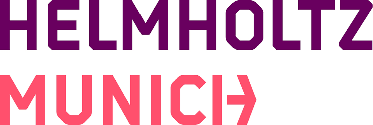
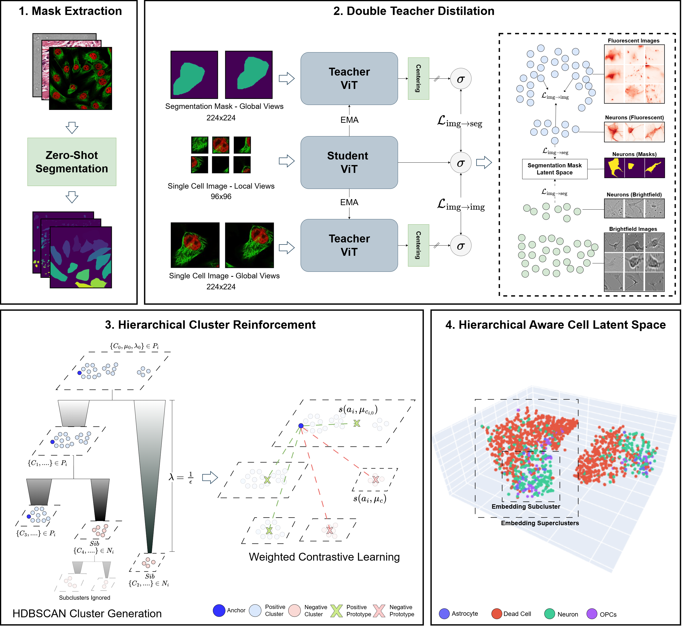
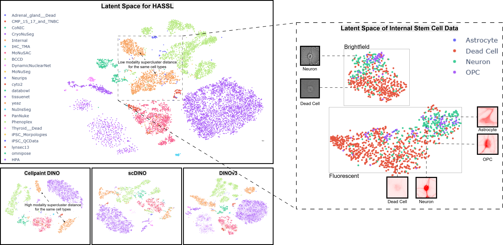
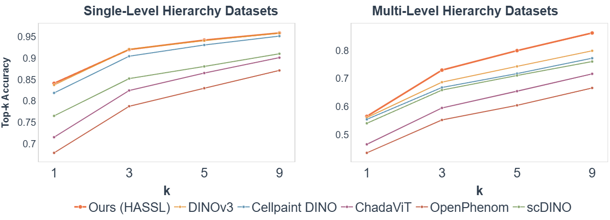

Learning morphologically grounded, hierarchically consistent cell embeddings — without any labels.


Figure 1. Hierarchy in cell imaging (left) and the HASSL embedding objective (right). HASSL learns a more hierarchical embedding space, leading to improved morphological representation and tighter subclusters — separating OPCs from neurons even within the same imaging modality.
Different cell types can appear indistinguishable under the same imaging modality, while the same cell type can look markedly different across modalities. Standard SSL models pick up on modality as the dominant cue, forming coarse "superclusters" that obscure biologically meaningful substructure. HASSL pushes the model to form a latent space where cells are organised by morphology first.
HASSL is a drop-in extension to DINO-style self-distillation. It adds two complementary objectives on top of the standard image-level DINO loss, with minimal compute overhead (+2.3% wall-clock, +10.2% VRAM over 100 epochs).
A segmentation teacher is trained alongside the standard EMA image teacher. Zero-shot cell masks (CellposeSAM) provide structure-aware supervision that biases the student away from modality cues and toward cell shape, initiating the emergence of morphology-based subclusters via a convex combination of three cross-view distillation terms: image→image, seg→seg, and image→seg.
At each training step, HDBSCAN is run on the current batch embeddings to obtain a condensed cluster tree. For each anchor, stability-weighted (λ) positive and negative prototypes are mined at every level of the hierarchy. The resulting hinge-contrastive loss pulls each cell toward its ancestor cluster centroids while repelling sibling subtypes, compressing subclusters and widening ambiguous boundaries.

Figure 2. Overview of the HASSL training pipeline. (1) Zero-shot segmentation maps are generated per cell. (2) A student ViT is trained via double-teacher distillation from a global image teacher and a segmentation teacher. (3) HDBSCAN derives a cluster hierarchy from batch embeddings; stability-λ-weighted prototypes define positive and negative pairs at each hierarchical level. (4) The resulting latent space organises cells into superclusters with clearer morphology-driven subclusters (astrocytes, neurons, OPCs, dead cells).
We curate a large-scale single-cell microscopy corpus spanning diverse imaging modalities, cell types, and biological contexts to train and evaluate hierarchy-aware representations.
We evaluate with a k-NN retrieval protocol on global embeddings across all test datasets, reporting Acc@K, Prec@K, mAP, and clustering agreement (NMI / AMI). All baselines are retrained on our split with the same resources for fairness.
| Method | Acc@1 | Acc@3 | Acc@5 | Acc@9 | mAP | NMI ↑ | AMI ↑ |
|---|---|---|---|---|---|---|---|
| Cellpaint-DINO | 44.8 | 55.7 | 61.7 | 68.9 | 49.7 | 47.0 | 46.4 |
| ChadaViT | 46.3 | 58.1 | 71.7 | 79.4 | 52.9 | 45.2 | 44.6 |
| OpenPhenom | 45.3 | 57.1 | 63.9 | 71.9 | 50.8 | 40.3 | 39.5 |
| scDINO | 50.4 | 61.9 | 68.0 | 75.3 | 55.4 | 43.9 | 43.3 |
| HCSC* | 46.1 | 61.6 | 64.5 | 79.7 | 53.9 | 45.3 | 44.6 |
| Baseline DINOv3* | 49.4 | 64.4 | 72.1 | 80.9 | 56.5 | 46.8 | 46.2 |
| DINOv3 + DBSCAN | 49.1 | 61.6 | 68.1 | 75.6 | 55.2 | 47.2 | 46.6 |
| DINOv3 + Unweighted HDBSCAN | 48.4 | 60.6 | 67.2 | 74.5 | 54.3 | 47.0 | 46.3 |
| HASSL (w/o Double Teacher) | 50.9 | 66.6 | 74.3 | 82.8 | 58.1 | 47.6 | 46.9 |
| HASSL (w/o HDBSCAN) | 50.6 | 67.6 | 75.1 | 82.9 | 57.4 | 47.2 | 46.2 |
| HASSL (Ours) | 50.9 | 68.0 | 75.5 | 83.5 | 57.8 | 47.9 | 47.3 |
Table 1. Top-k retrieval and clustering agreement (%). * retrained on our subset for fairness. Stability-weighted HDBSCAN and Double-Teacher distillation provide complementary gains; their combination yields the strongest clustering agreement.

Figure 3. Latent space visualization on the test set (t-SNE, dim=2). In the internal stem cell data (orange), double-teacher distillation brings superclusters of different modalities but the same cell type closer, while HDBSCAN keeps subclusters compact and discernible.

Figure 4. Top-k retrieval on flat (depth=1, left) vs. deep hierarchy (depth>1, right) dataset subsets. HASSL improves by +6.3% at K=9 on multi-level hierarchy datasets without compromising performance on flat ones.
We train a frozen-backbone MLP classifier on our curated dataset and two held-out sets (Human Protein Atlas and the Allen Institute Drug Perturbation Dataset) to assess generalisation and biological relevance.
| Method | Acc (%) | F1 macro | F1 wt. |
|---|---|---|---|
| HASSL (Ours) | 45.6 | 48.8 | 43.6 |
| Baseline DINOv3 | 44.9 | 47.6 | 42.8 |
| Cellpaint-DINO | 43.4 | 49.4 | 41.4 |
| ChadaViT | 42.6 | 46.1 | 40.6 |
| HCSC | 41.9 | 43.1 | 41.9 |
| scDINO | 37.6 | 37.7 | 34.4 |
| OpenPhenom | 34.7 | 28.6 | 31.7 |
Table 2. Curated dataset cell-type classification.
| Method | Acc (%) | F1 macro | F1 wt. |
|---|---|---|---|
| HASSL (Ours) | 92.2 | 88.9 | 92.0 |
| OpenPhenom | 85.7 | 75.8 | 84.2 |
| Cellpaint-DINO | 84.2 | 71.8 | 81.7 |
| Baseline DINOv3 | 81.9 | 77.1 | 81.8 |
| ChadaViT | 79.2 | 72.5 | 78.3 |
| HCSC | 64.4 | 56.2 | 63.5 |
| scDINO | 65.0 | 53.8 | 63.4 |
Table 3. Drug perturbation identification (Allen Institute). HASSL leads by +7.8 F1wt.
If you find this work useful, please consider citing: